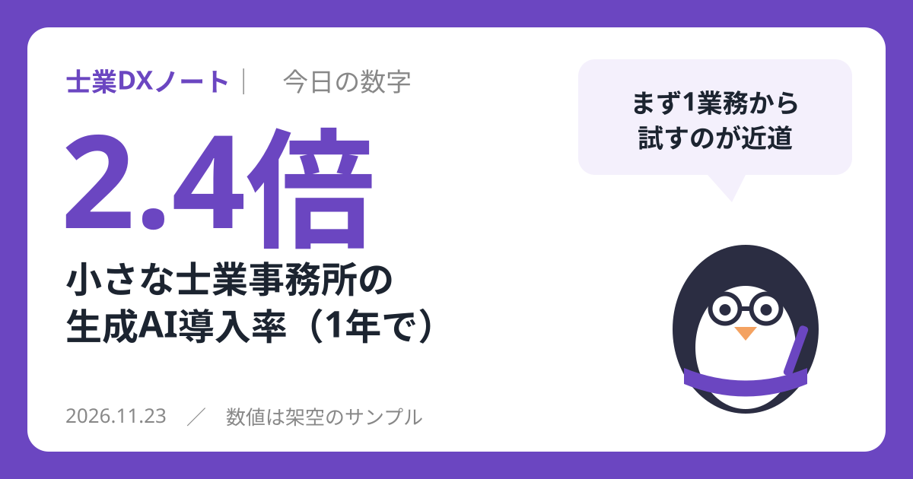

小規模な士業事務所の生成AI導入率が29%に
1年で2.4倍、未導入の理由は「情報漏えいが心配」が最多
所員5人以下の士業事務所のうち、生成AIを業務で使っている事務所は29%で、前年の12%から2.4倍に増えました。使っていない事務所が挙げた理由で最も多かったのは「顧客情報の漏えいが心配」（58%）です。
2025年調査12%
2026年調査29%
使い道は「文書の下書き」が最多
導入している事務所に用途を聞いたところ（複数回答）、文書の下書きが68%、法令や通達の要約が54%でした。書類のチェックに使っている事務所は22%にとどまります。
使わない理由の1位は情報漏えいへの懸念
デジタル化の補助金、12月1日から公募
小規模事業者のデジタル化を支援する補助金の第3回公募が12月1日に始まります。今回からAIツールの利用料も対象に加わりました。
| 公募期間 | 2026年12月1日〜2027年1月30日 |
|---|---|
| 補助率・上限 | 費用の2分の1、上限150万円 |
| 主な対象 | 業務ソフト、クラウドサービス、AIツールの利用料（最大2年分） |
この記事のファクト
- 所員5人以下の士業事務所の生成AI導入率は29%（前年12%）出典：小規模士業ネットワーク「事務所のIT利用調査2026」回答1,240事務所（架空）
- 用途は文書の下書き68%、法令・通達の要約54%、書類チェック22%出典：同調査（複数回答）
- 未導入の理由は情報漏えいへの懸念58%、使い方がわからない37%出典：同調査（複数回答）
- デジタル化補助金の第3回公募は12月1日開始、AIツールの利用料が新たに対象出典：所管省庁の公募要領（2026年11月20日公表、架空）
ペン子の見解
「入れない情報」を先に決めれば、怖さは減らせる
使わない理由の1位が情報漏えいの心配というのは、慎重な士業らしい結果だなと思います。ただ、その心配の中身は「何を入力していいのかわからない」ことである場合が多いんですよね。
氏名やマイナンバー、給与額など、「入力しない情報」の一覧を先に作ってしまえば、文書の下書きや法令の要約のように顧客情報を含まない使い方から始められます。今回から補助金の対象にもなったので、費用の面でも試しやすくなりました。
明日からできること：事務所で「AIに入力しない情報」を5つ書き出して、所内で共有する。
※見解はファクトをもとにした本誌キャラクターの意見です。個別の法的判断や、特定の製品をおすすめするものではありません。
次に注目する点
- 補助金の採択結果で、AIツールの申請がどれだけ通るか
- 書類チェック用途（現在22%）が伸びるかどうか
士業DXノートは、公開された調査・制度・料金改定を毎日集めて伝えます。事務所での導入の結果（費用・失敗した点）の情報提供も受け付けています。